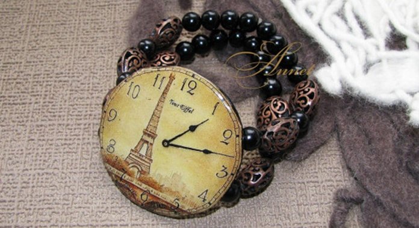

Заголовок Н1 Новая коллекция ручных часов
Наручные женские часы не только необходимость знания времени, но и элемент имиджа, предмет гордости, и украше ние! Для женщин стало престижно иметь не одни часы, а несколько. Они ведь, несомненно, должны сочетаться с Ва- шим нарядом. Сплошная элегантность и роскошь, браслет и корпус инкрустированы стразами, застежка простая.
Они ведь, несомненно, должны сочетаться с Вашим нарядом. Сплошная элегантность и роскошь, браслет и корпус инк рустированы стразами, застежка проста, удобна в применении.
Заголовок Н3
Наручные женские часы не только необходимость знания времени, но и элемент имиджа, предмет гордости, и украше ние! Для женщин стало престижно иметь не одни часы, а несколько. Они ведь, несомненно, должны сочетаться с Ва- шим нарядом. Сплошная элегантность и роскошь, браслет и корпус инкрустированы стразами, застежка простая.